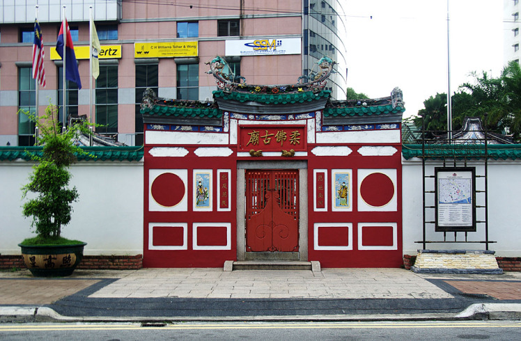

Popular Tourist Attractions
-
Legoland
Home to the most successful rides, brslides, shows and attractions from LEGOLAND Parks around the world, LEGOLAND Malaysia Resort is tailor-made for the local environment.
More Information> -
Sultan Abu Bakar State Mosque
The Sultan Abu Bakar Mosque is a stunning architectural marvel located in Johor Bahru, Malaysia.
More Information> -

Johor Chinese Old Temple
The temple history dates back as early as between 1870 and 1880 in the 19th century.
More Information> -
Arulmigu Sri Rajakaliamman Glass Temple
It was established in 1922 as a simple shelter on land presented by the Sultan of Johor.
More Information>
About Tourist Attractions
-
Jalan Tan Hiok Nee - A historic street named after Tan Hiok Nee, a prominent 19th-century port owner and Johor's only overseas Chinese leader.
Tan Hiok Nee is also the only overseas Chinese leader in Johor history
More Information> -
Danga Bay (Malay: Teluk Danga) is the largest recreational park in the city of Johor Bahru, Johor, Malaysia.
It was developed by Tan Sri Datuk Lim Kang Hoo via Ekovest Berhad and is located near Istana Bukit Serene, about 7 km from Johor Bahru's city centre.
More Information> -
Salahuddin Wood Fired Bakery - Established at Johor Bahru Old Town Since 1937
Salahuddin Bakery, in its third generation now was founded in 1937 by Shariff Mohamed Mahku from New Delhi.
More Information>